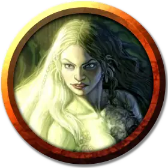

Сирена
Siren
Средняя Фея, хаотично-добрая

Класс Доспеха 14
Хиты 38 (7к8 + 7)
Скорость 30 футов, плавая 30 футов
| мод | спас | ||
|---|---|---|---|
| СИЛ | 10 | +0 | +0 |
| ЛОВ | 18 | +4 | +4 |
| ТЕЛ | 12 | +1 | +1 |
| мод | спас | ||
|---|---|---|---|
| ИНТ | 13 | +1 | +1 |
| МДР | 14 | +2 | +2 |
| ХАР | 16 | +3 | +3 |
Навыки Выживание +4, Медицина +4, Природа +3, Скрытность +6
Чувства тёмное зрение 60 футов, пассивное Восприятие 12
Языки Общий, Сильван, Эльфийский
Опасность 3 (700 опыта)
Бонус мастерства +2
Особенности
Амфибия. Сирена может дышать и воздухом, и под водой.
Врождённое колдовство. Базовой характеристикой сирены является Харизма (Сл спасброска от заклинаний 13). Она может накладывать следующие заклинания, не нуждаясь в материальных компонентах:
• 1/день каждое: высшая невидимость [greater invisibility], очарование личности [charm person], превращение [polymorph] (только на себя), туманное облако [fog cloud].
Сопротивление магии. Сирена совершает с преимуществом спасброски от заклинаний и прочих магических эффектов.
Действия
Короткий меч. . Рукопашная атака оружием: +6 к попаданию, досягаемость 5 фт, одна цель. Попадание: 7 (1к6 + 4) колющего урона.
Приводящее в оцепенение касание. Сирена касается одного видимого ей существа в пределах 5 футов. Существо должно преуспеть в спасброске Интеллекта Сл 13, иначе получает 13 (3к6 + 3) урона психической энергией и становится ошеломлённым до начала следующего хода сирены.
Описание
Заключённая в заполненную туманом камеру в Гробнице ужасов, сирена служит доказательством жестокого чувства юмора Ацерерака. Эта таинственная фея жаждет освобождения, но чары, наложенные на неё демиличем, не позволяют ей рассказать посетителям, как его достичь. Если кому-то удастся освободить её, она поклянется тому в дружбе до конца жизни.